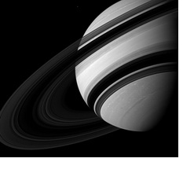

|
Сатурн в гороскопе
Символика Сатурна – форма, структура, время, ограничения, законы, логика.
Сатурн в знаках зодиака показывает способность четко выполнять свои обязательства, требовательность к себе и к людям, умение сказать «нет», внутренний стержень человека.
С Сатурном связано все то, что говорит “нельзя” и “надо”.
Сатурн - символ времени и тяжести судьбы, символ долга, обязательств, ответственности, символ упорства, настойчивости, выдержки, выносливости, терпения, целенаправленности. Он также является символом задержки, торможения, ограничений, тяжелого физического труда, самых различных жизненных испытаний, старости, одиночества, уединения, замкнутости.
Характеристика Сатурна в Козероге представлена ниже:
Сатурн в Козероге
У людей с Сатурном в Козероге преобладает честолюбие, стремление к власти, положению, авторитету, проявляющиеся главным образом в деловых, научных и политических сферах. В карьере хотят особо отличиться. Ничего не делают без практического намерения. Они хорошие организаторы, стараются с одной стороны развивать амбиции, с другой укреплять безопасность. Таким образом, без риска достигают высшего положения. На других людей своей строгостью и серьезностью производят холодное впечатление. Умеют выслушивать приказания от авторитетных лиц, а достигнув положения ждут того же от своих подчиненных. В делах и политике консервативны. По их мнению, традиционные структуры власти имеют необходимые основы для существования, которые не следует ставить под сомнение. Борьба за надежность и самостоятельность, которую они обычно выдерживают в молодости, помогает позже при развитии практических консервативных принципов поведения. По их мнению, никто не имеет права давать советы другим или брать на себя большую политическую или экономическую ответственность, пока не устроит успешно свои дела. Они знают, что за все надо платить и что каждый должен вносить свою лепту в устройство мира. Эти люди уверены что, каждый должен получить, что заслужил, благодаря своим личным усилиям. Поэтому, достигнув высот, поддерживают других во мнении, что каждый должен помогать себе сам. Но к старости забывают тяжелую борьбу юности, когда сами начинали без средств и помощи. Для этих людей нередки случаи использования своего богатства для контроля других. Они стремятся завоевать авторитет. У них развито чувство семейных традиций и семейной чести. Нередко для этих людей, произошедших из богатых и видных семьи, непонимание человеческих ценностей, так как сами не познали борьбы, не имея средств. При отсутствии у таких людей сострадания, они легко используют более слабых в социальном отношении и экономическом положении. Они могут достигать как больших духовных высот, так и больших глубин материализма и эгоизма. Если их юность проходит в условиях бедности и неблагоприятном семейном окружении - это дает им дополнительный стимул для преодоления трудностей и достижения видного и сильного положения. Для таких людей жизнь - это важный вопрос и борьба. Часто они оценивают вещи по критериям цены и внешнего вида. Людям с Сатурном в Козероге нужно развивать чувство юмора и подниматься выше материализма и общественного положения. Иначе стремление к положению будет самоцелью, а не средством наведения общественного порядка. Часто этих людей отличает честность и приличия, но иногда они не гнушаются никакими средствами для получения положения, власти и богатства, что делает их ужасными диктаторами.
|


 Тайна имени
Тайна имени Сатурн в знаке Козерог
Сатурн в знаке Козерог